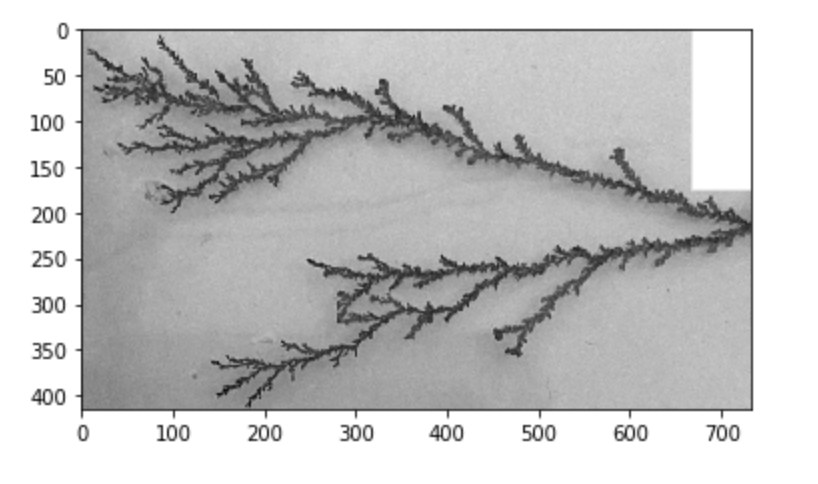
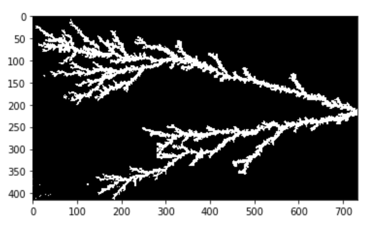

Outreach
I'm a firm believer in giving back to the STEM and academic community as much as I can. Teaching and outreach is also a valuable area where I can give back in terms of bringing representation to the sciences; an area where equity and inclusion, unfortunately, is still so far behind. My introduction to equity and inclusion matters can be found on my About Me page.

I began doing outreach in my third year of university, bolstered by the experienced I'd gained in high school teaching English in a Chinese kindergarten on school afternoons and volunteering for my local library in Florida. The outreach I did at the Univeristy of Hertfordshire included:
- organising students and staff for public evenings at the Bayfordbury observatory,
- and leading planetarium presentations at schools and at general public events (in both small and large planetariums, and what was, at the time, the largest inflatable planetarium in the UK!).
I continue doing outreach as a letter writer for Letters to a Pre-Scientist, which encourages young students in the United States to learn more about STEM careers (pictured above!).
Teaching
During my PhD, I demonstrated in a year-two Natural Sciences laboratory course (NSC2001) at the University of Exeter. This entails:
- helping students prepare and understand experiments,
- teaching students about the difference between ChatGPT and Google, and introducing them to using AI tools effectively and ethically,
- working with them through the experiments including troubleshooting on the day of,
- and grading reports and presentations from students.
After demonstrating from 2019-2022, helping to adapt the course to online learning during the pandemic and then transitioning back again, I am lead demonstrator for the 2022-2023 academic year, formalising my role in the past where I have helped interface between module leaders and fellow demonstrators and lab technicians.
Getting to see students grow from experiment to experiment to scientists in their own right was one of the best aspects of teaching. The images to the left and right here represent one of the experiments the students were performing--recreating fractals with electrodeposition--and part of my duties entailed helping their efforts in representing their experiments with Python modelling, or setting up their experiment design in an effective way.